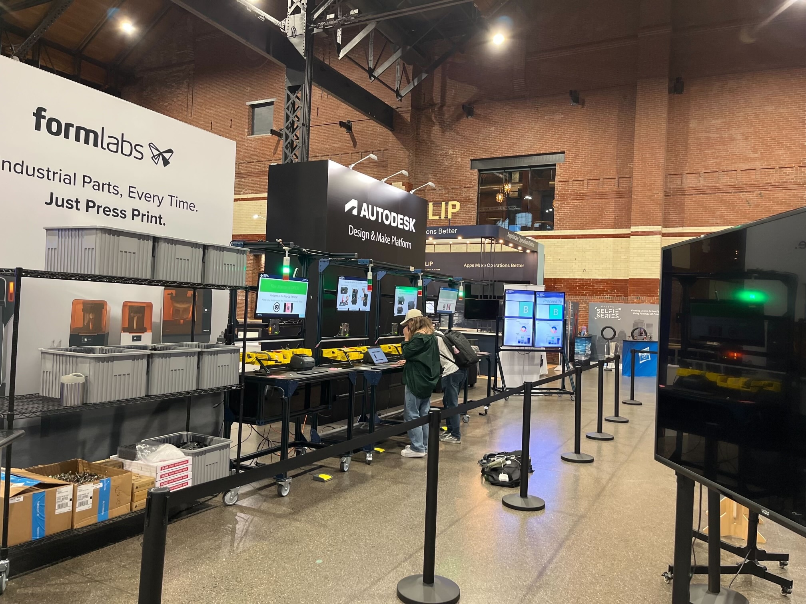

i currently (as of august 2024) work on keurig dr pepper's product design team. i mostly do UI/UX focused stuff with our brewers (not super involved in the dr pepper part).
i perform tests on existing brewer models, analyze/compile data to understand user journeys, and recommend design improvements for new, upcoming brewers.
my last job was at tulip interfaces as a engineering co-op. i did a little bit of everything,
working with tech partners to create content for them, and get really comfortable with the tulip ecosystem. also helped develop, set-up,
and support the creation of demos for our various tech conferences, such as href-"https://tulip.co/ebooks/40-hour-pop-up-factory-2023/" target="_blank>this,
thing i built for it.

me working on the digital factory circa sep 12 2023
my first co-op was at a place called href="https://www.serestherapeutics.com" target="_blank"> seres therapetics as a
facilities and automation engineer. my coop was extended to a part-time position so i ended up working there for a year. it was cool,
i was involved in a lot of biotech stuff that (at the time) was way over my head, and got to be there for their first FDA drug approval.
about me: fun edition
i like to write satire. for four glorious years i was involved in the husky husky, northeastern's student
run satire paper. i have a unique perspective on all matters and am probably the most qualified person on
earth to write news.